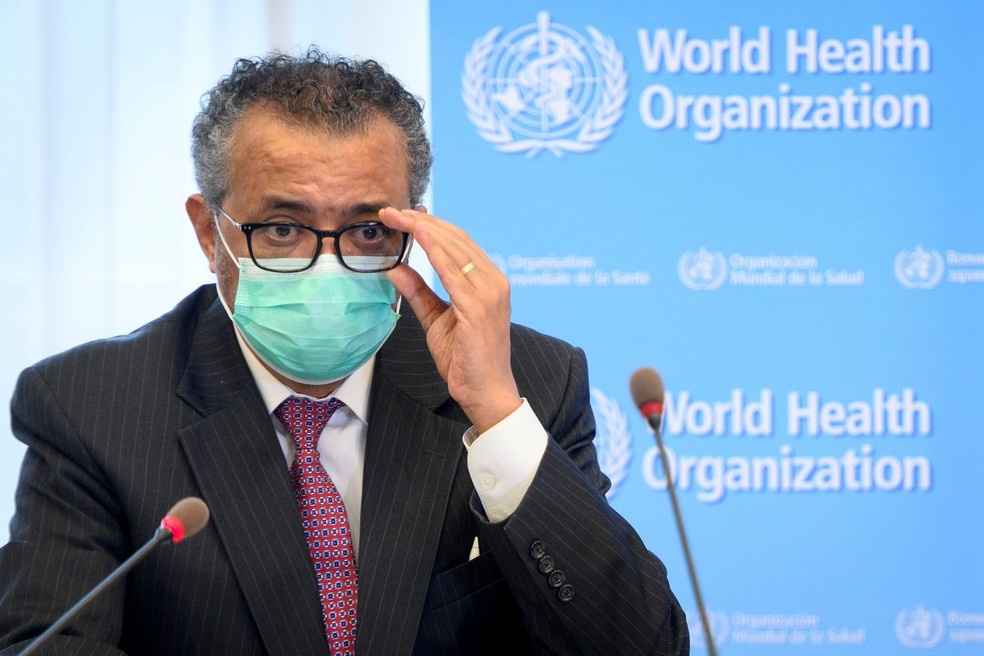
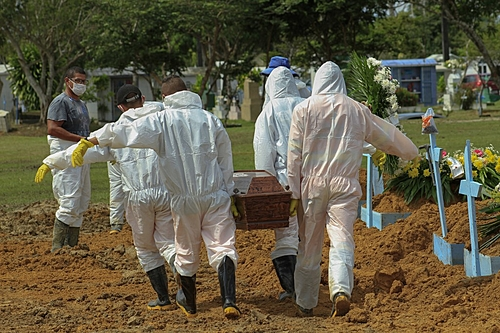
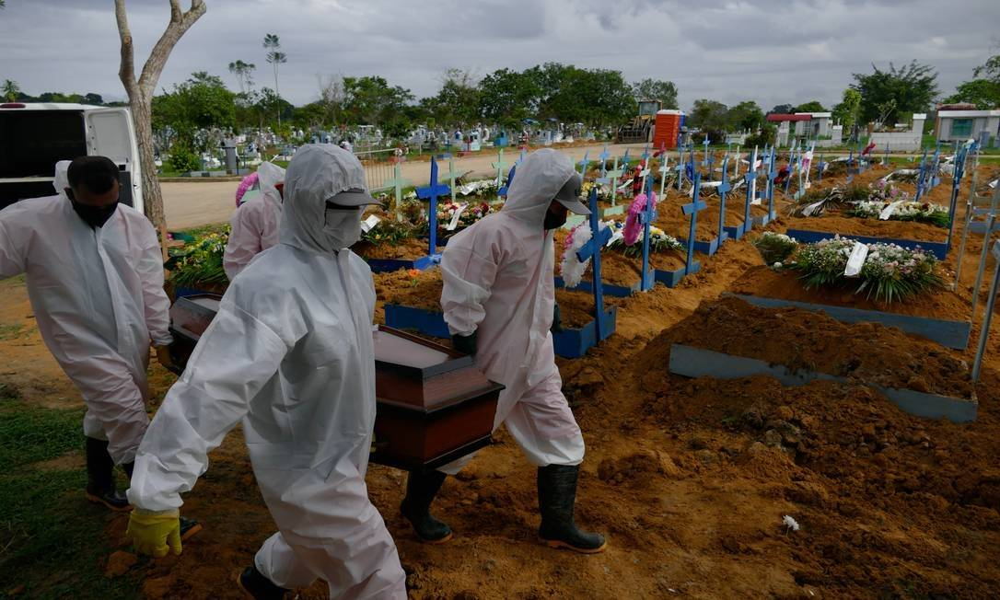
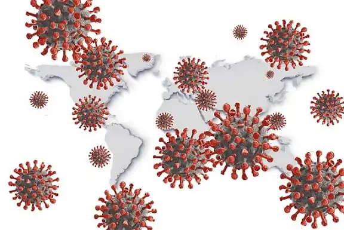
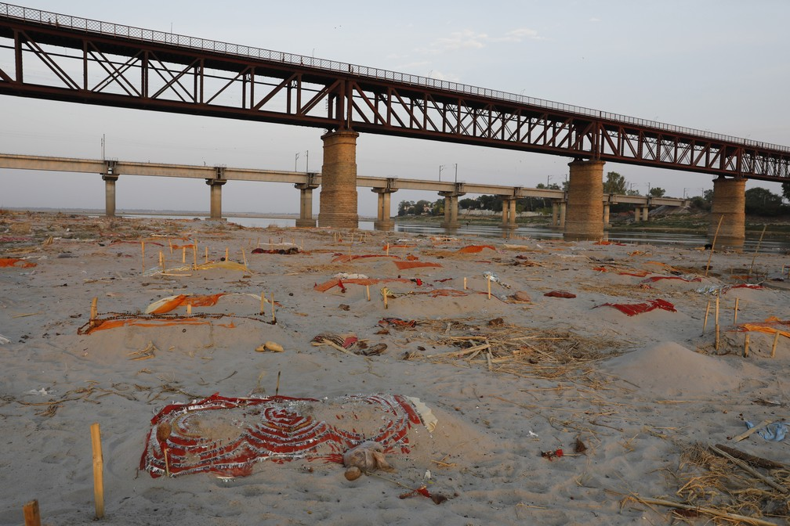

Ultimas notícias sobre o coronavírus no mundo
O último milhão de óbitos foi registrado em tempo recorde: apenas 81 dias. Brasil passou a Índia de novo e é o país que tem a maior média de novas vítimas do novo coronavírus.
A marca é superada com o Brasil de novo como o país que tem a maior média diária de novas vítimas do coronavírus do planeta.
Foram 263 dias para a pandemia chegar ao 1º milhão de vítimas, mais 108 dias para o 2º milhão, outros 93 dias para o 3º milhão e apenas 81 dias para ultrapassar a marca atual.
Apesar da declaração, o painel da OMS reporta na manhã desta quarta 3.988.565 mortes causadas pela Covid-19. O monitoramento da Universidade Johns Hopkins aponta 3.995.703 vítimas e o "Our World in Data", projeto ligado à Universidade de Oxford, 3,99 milhões.
Brasil como o pior país
O número de mortes por Covid-19 tem recuado também no Brasil, de uma média de mais de 3,1 mil em meados de abril para cerca de 1,5 mil por dia na última semana, mas o patamar atual ainda é muito alto.
O Brasil é o país que a maior média de óbitos por dia por Covid-19 desde 20 de junho (posto que já havia ocupado entre março e abril deste ano e entre junho e julho do ano passado).
Atualmente, a média diária de vítimas no Brasil é mais do que a de Índia e Rússia juntos (o 2º e 3º países do ranking. Veja na tabela abaixo:
Países com as maiores médias de novas mortes por Covid-19
- 1. Brasil: 1.574
- 2. Índia: 806
- 3. Rússia: 658
- 4. Colômbia: 591
- 5. Indonésia: 511
- 6. Argentina: 483
- 7. África do Sul: 305
- 8. Peru: 213
- 9. EUA: 198
- 10. México: 154
Mortes, casos e vacinação
O mundo tem atualmente 184 milhões de casos de Covid-19 confirmados, e os países já aplicaram mais de 3,2 bilhões de vacinas para combater a doença e o vírus.
O Brasil é o 2º país com mais óbitos, o 3º com mais infectados e o 4º que mais aplicou doses de imunizantes.
Todos os números são do "Our World in Data", projeto ligado à Universidade de Oxford, e da Universidade Johns Hopkins.
Os 10 países com mais mortes por Covid
- 1. EUA: 605 mil
- 2. Brasil: 525 mil
- 3. Índia: 403 mil
- 4. México: 233 mil
- 5. Rússia: 137 mil
- 6. Reino Unido: 128 mil
- 7. Itália: 127 mil
- 8. França: 111 mil
- 9. Colômbia: 109 mil
- 10. Argentina: 96 mil
Os 10 países com mais casos confirmados de Covid
- 1. EUA: 33,7 milhões
- 2. Índia: 30,6 milhões
- 3. Brasil: 18,7 milhões
- 4. França: 5,8 milhões
- 5. Rússia: 5,5 milhões
- 6. Turquia: 5,4 milhões
- 7. Reino Unido: 4,9 milhões
- 8. Argentina: 4,5 milhões
- 9. Colômbia: 4,3 milhões
- 10. Itália: 4,2 milhões
Os 10 países com mais vacinas contra Covid aplicadas
- 1. China: 1,32 bilhão
- 2. Índia: 351 milhões
- 3. EUA: 330 milhões
- 4. Brasil: 106 milhões
- 5. Reino Unido: 79 milhões
- 8. Alemanha: 77 milhões
- 7. França: 56 milhões
- 6. Turquia: 54 milhões
- 10. Itália: 53 milhões
- 9. Japão: 50 milhões
Evolução da pandemia
O primeiro milhão de mortes foi marcado por uma primeira onda na Europa, entre março e abril de 2020, que assustou o mundo e levou os países a adotarem severas medidas de restrição para diminuir a proliferação do vírus.
O segundo milhão de vítimas foi marcado por uma aceleração constante no número de óbitos primeiro na Europa, impulsionada pela variante alfa, detectada inicialmente no Reino Unido, e posteriormente nos Estados Unidos, o que levou o mundo a atingir na época o recorde de mortes diárias.
O terceiro milhão de óbitos foi marcado por uma forte queda no número de mortes tanto nos EUA quanto na Europa, após severas restrições e com a aceleração da vacinação. Ao mesmo tempo, os óbitos já começavam a crescer na América do Sul e na Ásia, a partir de março.
Já o quarto milhão foi marcado por uma disparada da pandemia na América do Sul e na Ásia, sobretudo por causa do Brasil e da Índia.
